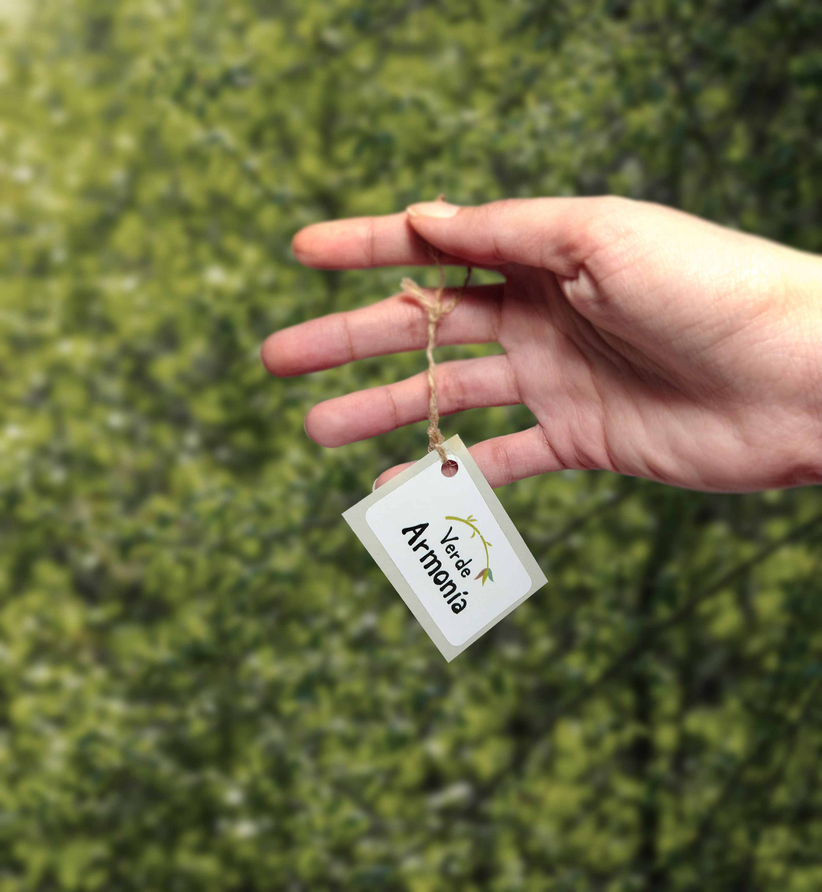
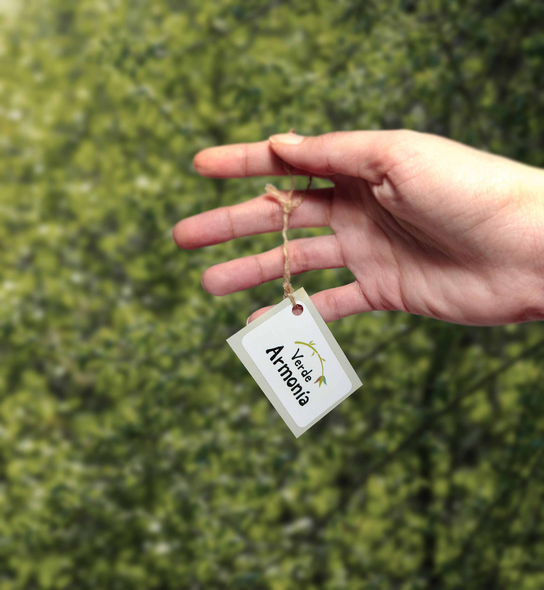

Espacio multidisciplinario, mayormente relacionado con terapias holísticas y como actividad secundaria la venta de plantas.
Concepto: Cultura del Asia del Este y del Sur como madre de las terapias holísticas / cuerpo, mente y alma en armonía.
Resultado: A través del sistema de diseño, el tema común de la representación de las tres partes importantes que la holística se ocupa del todo (cuerpo, mente y alma) y se representan estas partes por tres colores, más el color base de gran parte del arte asiático, el color negro o tinta china.
El diseño incluye:
Papelería institucional
Sitio web
Packaging
Afiches
Folletos
AÑO: 2019
CLICK AQUÍ PARA VER EL PROCESO COMPLETO
 
